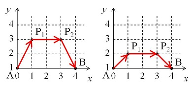

On the Euclidean plane, an ant travels from point $A(0, 1)$ to point $B(d, 1)$ for an integer $d$.
In each step, the ant at point $(x_0, y_0)$ chooses one of the lattice points $(x_1, y_1)$ which satisfy $x_1 \ge 0$ and $y_1 \ge 1$ and goes straight to $(x_1, y_1)$ at a constant velocity $v$. The value of $v$ depends on $y_0$ and $y_1$ as follows:
The left image is one of the possible paths for $d = 4$. First the ant goes from $A(0, 1)$ to $P_1(1, 3)$ at velocity $(3 - 1) / (\ln(3) - \ln(1)) \approx 1.8205$. Then the required time is $\sqrt 5 / 1.8205 \approx 1.2283$.
From $P_1(1, 3)$ to $P_2(3, 3)$ the ant travels at velocity $3$ so the required time is $2 / 3 \approx 0.6667$. From $P_2(3, 3)$ to $B(4, 1)$ the ant travels at velocity $(1 - 3) / (\ln(1) - \ln(3)) \approx 1.8205$ so the required time is $\sqrt 5 / 1.8205 \approx 1.2283$.
Thus the total required time is $1.2283 + 0.6667 + 1.2283 = 3.1233$.
The right image is another path. The total required time is calculated as $0.98026 + 1 + 0.98026 = 2.96052$. It can be shown that this is the quickest path for $d = 4$.

Let $F(d)$ be the total required time if the ant chooses the quickest path. For example, $F(4) \approx 2.960516287$.
We can verify that $F(10) \approx 4.668187834$ and $F(100) \approx 9.217221972$.
Find $F(10000)$. Give your answer rounded to nine decimal places.
solve(d=4) → ?solve(d=10000) → ?